Data Types


Nicolas Guarin-Zapata
email: nicoguarin@gmail.com
twitter: @nicoguaro
github: nicoguaro
June 2017
You can download the most recent version of Paraview in the Official website and just run the installer in your machine:
You can clone the repo using:
git clone https://github.com/nicoguaro/paraview_workshop.gitOr download as a zip in
From Wikipedia:
ParaView is an open source multiple-platform application for interactive, scientific visualization. It has a client–server architecture to facilitate remote visualization of datasets, and generates level of detail (LOD) models to maintain interactive frame rates for large datasets. It is an application built on top of the Visualization Toolkit (VTK) libraries.
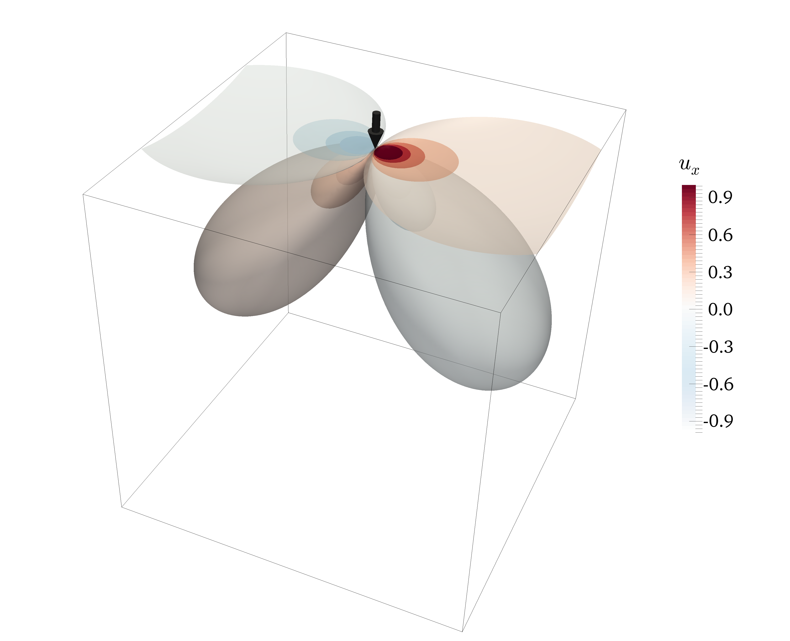 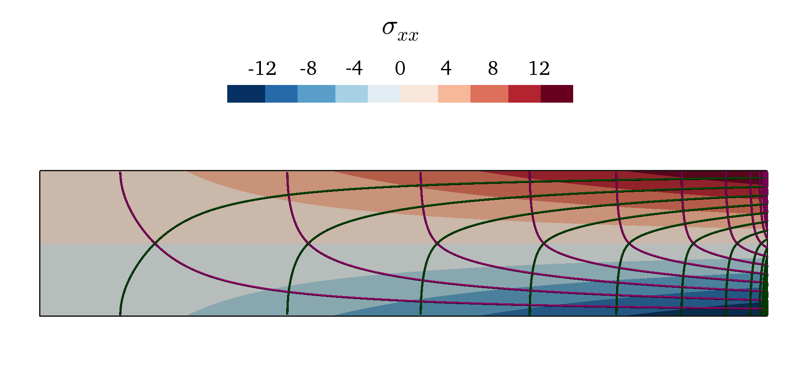
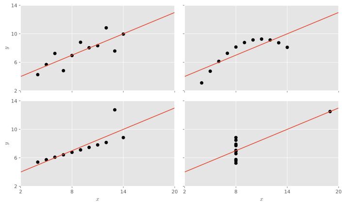
| Property | Value |
|---|---|
| Mean of each x variable | 9.0 |
| Variance of each x variable | 11.0 |
| Mean of each y variable | 7.5 |
| Variance of each y variable | 4.12 |
| Correlation between x and y variables | 0.816 |
| Regression line | y = 3 + 0.5x |
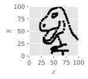
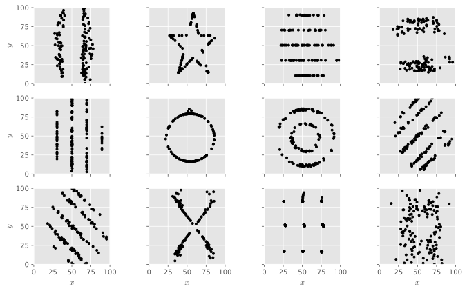
| Property | Value |
|---|---|
| Mean of each x variable | 54.26 |
| Standard deviation of each x variable | 16.76 |
| Mean of each y variable | 47.83 |
| Standard deviation of each y variable | 26.93 |
| Correlation between x and y variables | -0.06 |

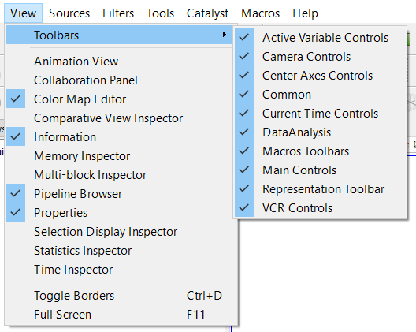
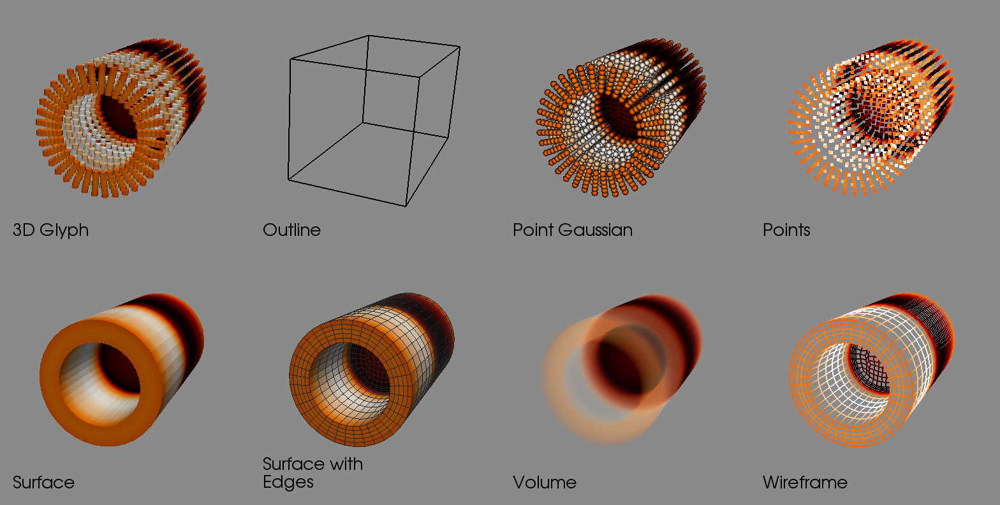
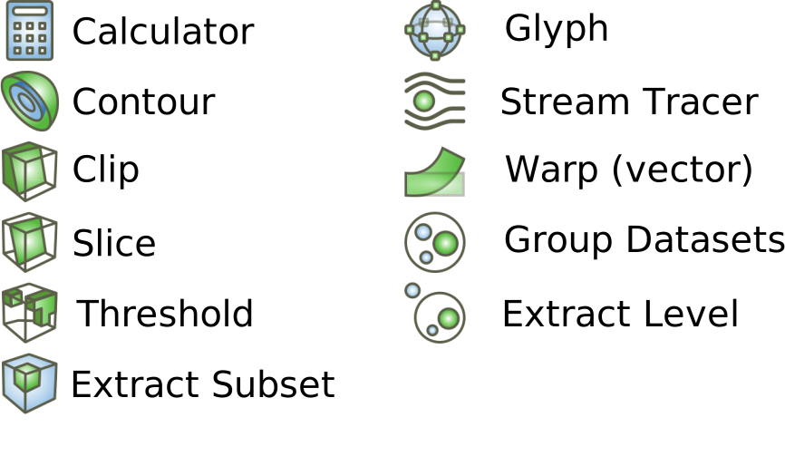
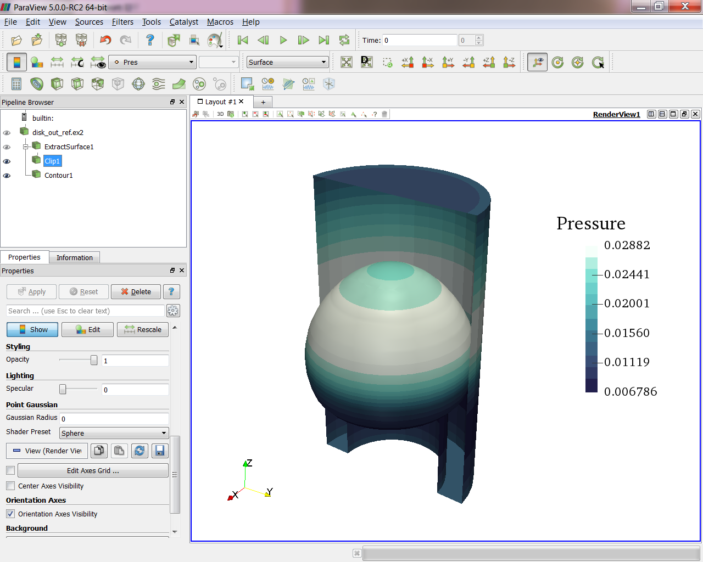
disk_out_ref.ex2.Extract Surface filter.Clip filter.Contour filter.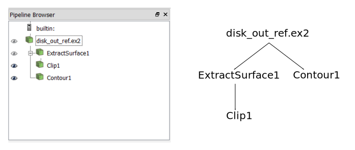
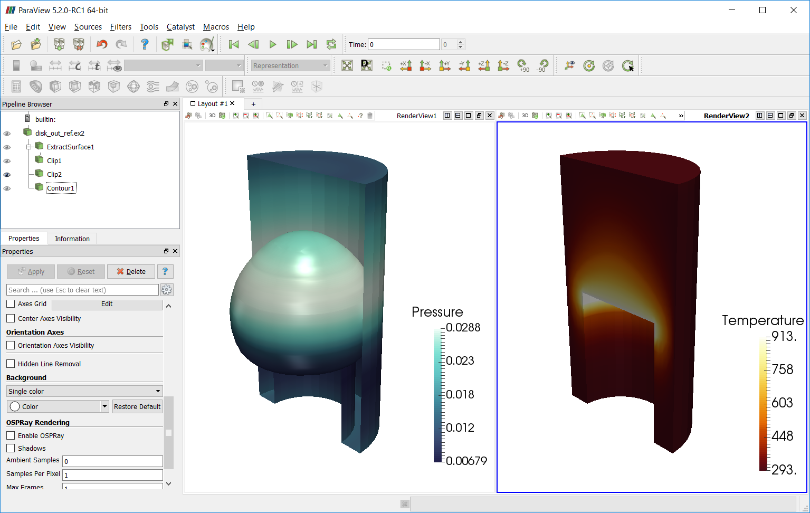
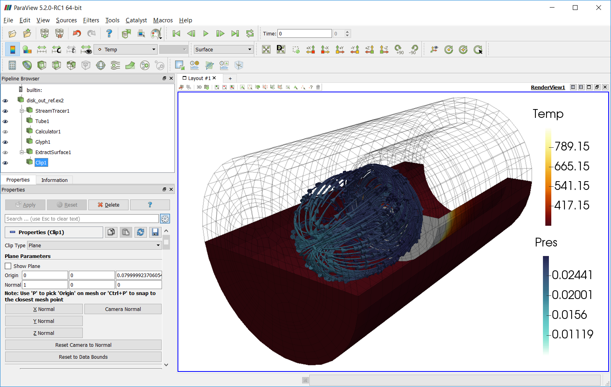
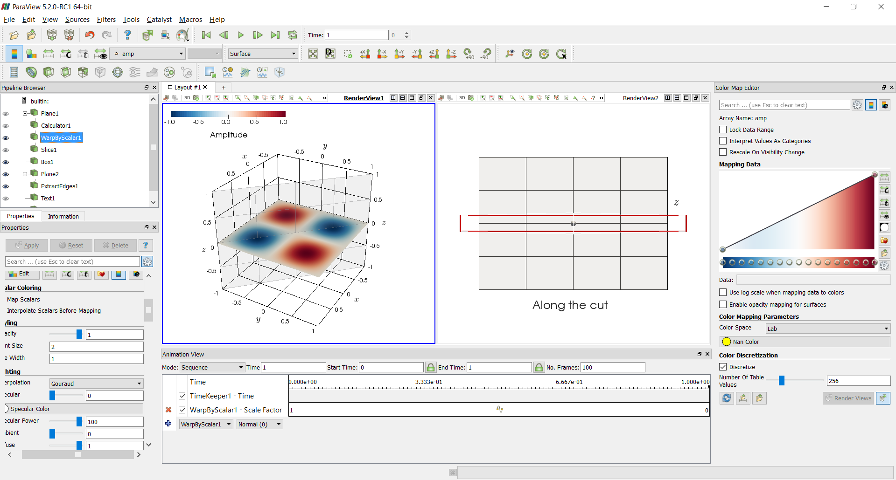
And the output video would be
In Tools/Python Shell
from paraview.simple import *
sphere = Sphere()
Show()
Render()
ResetCamera()we can create a filter
Hide()
shrink = Shrink()
Show()
Render()we can branch the pipeline
wireframe = ExtractEdges(Input=sphere)
Show()
Render()or modify the properties of the sphere
sphere.ThetaResolution = 100
sphere.PhiResolution = 50
Render()We can animate PacMan in ParaView